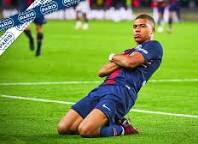
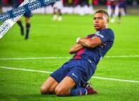
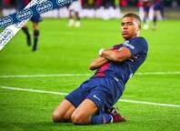

ফ্রান্সের ৭ নাম্বার জার্সি ধারি গ্রিসম্যান
তার খেলায় অসাধারণ নৈপুণ্য ও প্রতিভা
দেখাচ্ছেন।
তার খেলায় অসাধারণ নৈপুণ্য ও প্রতিভা
দেখাচ্ছেন।
২০১৮ বিশ্বকাপ থেকেই অসাধারণ নৈপুণ্য ও দক্ষতার
সঙ্গে খেলে যাচ্ছেন গ্রিসম্যান।তার বল পায়ে নিয়ে অ
সাধারণ দৌড় ও ড্রিবলিং হাজারো ভক্তের মন ছুয়ে নি
য়েছে। এবারের বিশ্বকাপেও তিনি অসাধারণ খেলছেন
। বর্তমানে ফ্রান্সের সেমিফাইনালে শক্তিশালী প্রতিপক্ষ
মরক্কো।শুভ কামনা রইলো ফ্রান্স ও গ্রিসম্যানের জন্য
 

ফুটবলে অসাধারণ নৈপুণ্য ও দক্ষতার
প্রতিক কিলিয়ান এমবাপ্পে
২০১৮ বিশ্বকাপ থেকেই অসাধারণ নৈপুণ্য ও দক্ষতার
সঙ্গে খেলে যাচ্ছেন গ্রিসম্যান।তার বল পায়ে নিয়ে অ
সাধারণ দৌড় ও ড্রিবলিং হাজারো ভক্তের মন ছুয়ে নি
য়েছে। এবারের বিশ্বকাপেও তিনি অসাধারণ খেলছেন
। বর্তমানে ফ্রান্সের সেমিফাইনালে শক্তিশালী প্রতিপক্ষ
মরক্কো।শুভ কামনা রইলো ফ্রান্স ও গ্রিসম্যানের জন্য
